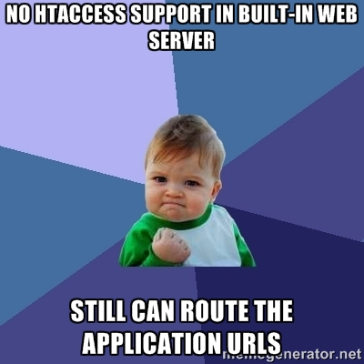

Contenido
- PHP
- Framework
- Aplicación (carrito de compras)
Caracteristicas
- PHP es un lenguaje de programación de código abierto del lado del servidor.
- En un inicio PHP representaba Personal Home Page, hoy en dia es el acrónimo recursivo PHP: Hypertext Preprocessor.
- PHP puede combinar código de PHP y HTML en un mismo archivo.
- La extensión de los archivos es .php
-


Etiquetas de PHP
<p>1.- Hello
<php?
echo " world!";
$variable = "2.- Hello PHP";
?>
</p>
<br>
<? echo $variable; ?> <!-- Con short_open_tag habilitado -->
<br>
<?= $variable ?> <!-- Forma abreviada de echo (v5.4+) -->
1.- Hello world!
2.- Hello PHP
2.- Hello PHP
Built-in Web Server
- Desde la versión 5.4.0 se cuenta con un servidor web integrado que provee la linea de comandos de PHP.
- Este servidor web integrado está diseñado para ayudar en el desarrollo de aplicaciones, pruebas o demostraciones.
- No se pretende que se utilize para ambientes productivos o en redes públicas.
- No soporta el uso de archivos .htaccess. :(
Pero existe una manera de utilizar un archivo PHP como router en el Built-in Web Server.

Built-in Web Server
Ejecutando el servidor integrado
$ cd my_awesome_project
$ php -S localhost:8080
> cd my_awesome_project
> c:\xampp\php\php.exe -S localhost:8080
$ php -S localhost:8080 -t /home/sergio/projects/my_awesome_project
> php.exe -S localhost:8080 -t c:\projects/my_awesome_project
Built-in Web Server
Ruteo de contenido estático
Para utilizar un script de ruteo en el desarrollo con el CLI Web Server que sea funcional en producción podemos utilizar la funcion php_sapi_name() que nos regresa el tipo de interfaz en la que se está ejecutando PHP.
<?php
// router.php
if (php_sapi_name() == 'cli-server') {
/* rutear contenido estático y retornar false */
}
/* continuar con el flujo normal del archivo .php */
?>
Built-in Web Server
Simulando un sitio web
Con ayuda de los archivos host y el servidor integrado tanto en linux como en windows podemos simular el estár trabajando con una página .com.
# C:\Windows\System32\drivers\etc\host
# localhost name resolution is handled within DNS itself.
127.0.0.1 localhost
127.0.0.1 mipagina.com
> php.exe -S mipagina.com:80 -t C:\mipagina.com
En el navegador ingresaremos a la dirección http://mipagina.com